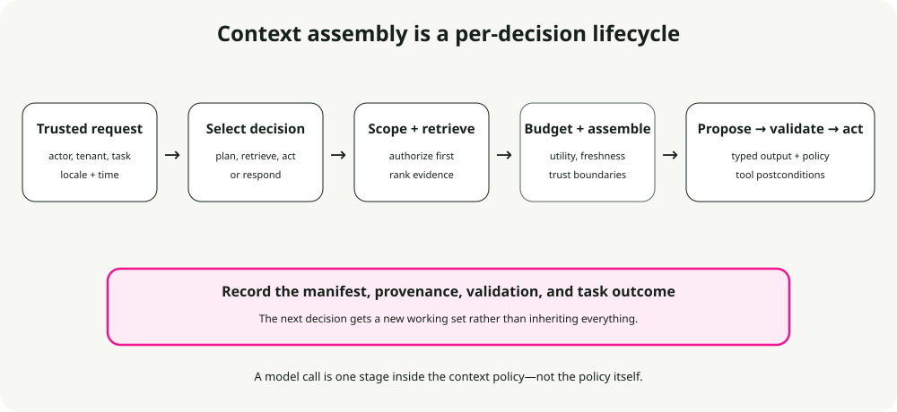

Context Engineering for AI Agents: Context Windows, Memory, Tools, and Guardrails
Context engineering is the pipeline that selects what a model sees before each decision: instructions, examples, knowledge, memory, tool definitions, observations, and guardrails. An agent does not act on everything the system knows. It acts on the working set assembled for the next model call.
That selection is where many failures begin. A stale preference looks current. Retrieved text contains an instruction. A long tool result hides the failed precondition. A summary remembers the decision but loses which file changed.
The practical job is to assemble the smallest sufficient working set for each decision while preserving scope, provenance, and permissions. This article walks through the patterns I use and the limits that keep them honest.
TL;DR. Treat context as a typed, provenance-carrying runtime artifact. Select it per step, enforce tenant and permission scope before retrieval, separate trusted instructions from untrusted data, budget by utility, validate actions outside the model, and evaluate task outcomes rather than context length alone.
Context is a decision input, not memory
The context window is the model's current input plus generated tokens. It may contain conversation turns, but it is not a durable memory system. Long-term memory, document indexes, databases, and artifact stores live outside the window; a context pipeline chooses what to copy in.
Window size is a capacity limit, not a quality guarantee. Long-context research such as Lost in the Middle and RULER shows that successful retrieval and reasoning can vary with position, task, model, and sequence length. The operational lesson is not that middle tokens are always ignored. It is that adding relevant-looking tokens can still reduce task performance.
Use a context manifest for every model call:
from datetime import datetime
from typing import Literal
from pydantic import BaseModel
class ContextItem(BaseModel):
item_id: str
kind: Literal["instruction", "task_state", "evidence", "memory", "tool"]
source: str
trust: Literal["trusted", "untrusted"]
retrieved_at: datetime | None = None
version: str | None = None
token_count: int
class ContextManifest(BaseModel):
request_id: str
tenant_id: str
items: list[ContextItem]
total_input_tokens: int
The manifest makes a failure reproducible. “The model hallucinated” becomes a testable question: which evidence, version, permission scope, and tool schema did it actually receive?
The assembly lifecycle

A reliable pipeline performs these operations in order:
- Resolve trusted request context. Authenticate the actor, tenant, locale, time, and current task state outside the model.
- Choose the next decision. A planning step, evidence lookup, tool selection, and final response need different context.
- Retrieve within scope. Apply authorization and tenant filters before semantic ranking, not after documents enter the candidate set.
- Rank and budget. Select items for utility, freshness, authority, and diversity under an input budget.
- Assemble with trust boundaries. Keep policy in instruction channels and quote retrieved content as data. Retrieved instructions do not become system policy.
- Generate a typed proposal. Constrained output can enforce supported syntax and shape; it cannot make values correct.
- Validate and execute. Application code checks authorization, business rules, tool arguments, and postconditions.
- Record provenance and outcome. Save the manifest, selected source IDs, tool result references, validation result, and task outcome.
The lifecycle is per decision. Reusing one large context for an entire agent run creates stale evidence and gives every step access to material it does not need.
Give each context source one job
Instructions define durable behavior
Instructions state role, policy, output contract, and escalation behavior. Keep stable content stable to improve prefix caching, but do not freeze values that change at runtime. A refund threshold belongs in a policy service or versioned data record, not copied into a prompt indefinitely.
Instruction hierarchy is a control boundary, not a security sandbox. A model can still follow malicious text in a retrieved document. Delimit untrusted content, state that it is evidence rather than instruction, restrict tools independently, and test prompt-injection cases.
Task state records commitments
Conversation prose is a poor source of truth for multi-step work. Keep explicit state for objective, current phase, completed actions, pending approvals, artifact references, and test status. The model may summarize that state for narration; application code owns the canonical version.
Examples demonstrate edge decisions
Few-shot examples are useful when they clarify a hard boundary, not merely repeat the schema. Select examples that match the current decision and include consequential edge cases. Evaluate example retrieval like document retrieval: a superficially similar but policy-incompatible example can be worse than none.
Knowledge supplies evidence
Retrieval is appropriate for fresh, private, or citable facts. There is no universal best top_k, chunk size, hybrid weight, or reranker cutoff. Tune the whole path against questions with known supporting evidence.
A useful evidence item includes:
- source and stable document identifier
- version or effective date
- permission scope
- quoted span and location
- retrieval and reranking scores for debugging
Do not ask the model to cite a URL it never received. Do not log full private documents merely to debug selection.
Memory supplies scoped continuity

Memory is retrieved data with additional lifecycle risk. Every record needs subject, provenance, purpose, consent or legal basis where applicable, creation time, expiry or review policy, and a deletion path.
Fixed rules such as “preferences live 365 days” are not portable policy. Retention follows product need, user expectation, and law. Before loading a memory, check:
- Is it for this authenticated subject and tenant?
- Is its purpose relevant to this decision?
- Is it current enough to use?
- Is its source authoritative or merely model-inferred?
Treat inferred memories as hypotheses. Do not silently turn one model response into a permanent user fact.
Tool contracts expose capabilities
Tool descriptions should explain preconditions, effects, authorization scope, input schema, output schema, idempotency, and meaningful failures. A schema-valid call can still be unauthorized or unsafe.
After execution, replace verbose raw output with a typed observation that preserves the decision-relevant result and a reference to the full artifact:
{
"tool": "check_api_key_status",
"status": "revoked",
"checked_at": "2026-07-15T09:30:00Z",
"account_id": "A-123",
"artifact_ref": "toolrun://req-42/step-3"
}
MCP standardizes how clients discover tools, resources, and prompts; it does not authorize their use or make returned content trustworthy. Keep gateway, credential, and policy checks outside the model and protocol description.
How context degrades
Poor context does not fail in only one way. The original version of this guide separated several patterns that remain useful during debugging:
- Position loss: the required evidence is present, but the model uses it inconsistently because of its position and the surrounding sequence. Long-context evaluations show that this varies by model and task; there is no universal “bad middle” range.
- Poisoning: an incorrect memory, stale document, malicious instruction, or bad tool observation enters the working set and influences later decisions.
- Distraction: relevant evidence competes with material that is recent or semantically similar but unnecessary for the current step.
- Confusion: overlapping instructions, examples, or tool descriptions leave the model with several plausible interpretations of the task.
- Clash: two authoritative-looking items disagree about a value, policy, or next action and the assembler does not expose their versions or precedence.
These failures require different fixes. Better ranking may help distraction but cannot repair a stale source. Delimiters may help separate data from instructions but cannot authorize a tool. A larger context window can preserve more conflicting material without resolving the conflict.
When a run fails, inspect the manifest and ask which pattern occurred before changing the prompt or adding another retrieval stage.
Budget by utility, not by component quota
A context budget reserves room for output and then allocates input to the current decision. Start from the model's supported window, subtract the maximum output and protocol overhead, and pack candidates into what remains.
Score candidates with features your evaluations can challenge:
utility = relevance × authority × freshness × scope_match
− redundancy_penalty − injection_risk
The formula is a design prompt, not universal mathematics. In a policy answer, authority may dominate semantic similarity. In debugging, a recent failing log may outrank general documentation.
Order also matters. Keep stable trusted instructions first when the provider's cache semantics benefit from a shared prefix. Put the current task and decision close to the evidence it references. Avoid timestamps or request IDs in stable prefixes when they are not needed there.
Compress without losing state

Compression is lossy unless the original remains addressable. Optimize tokens per successful task, not tokens per request: an aggressive summary that forces re-retrieval or causes a wrong tool call is not cheaper.
Use separate mechanisms for separate material:
- Conversation: summarize decisions, unresolved questions, and commitments.
- Tool observations: retain typed findings and artifact references; remove boilerplate and repeated payloads.
- Retrieved evidence: keep source IDs, supporting spans, and effective dates so the system can re-fetch.
- Task state: store canonically outside the summary.
- File or artifact trail: maintain an explicit index of reads, writes, hashes, and test results.
Trigger compaction from measured degradation or a budget threshold chosen for the model and task. Do not publish a generic “compress at 70%” rule as if all models fail at the same point.
Evaluate compression with probes that require continuation, not lexical overlap:
- What is the current objective and next action?
- Which files or records changed?
- Which decision was rejected and why?
- Which source supports the current claim?
- What approval is still pending?
Run the same task with and without compression. Compare success, incorrect actions, re-fetches, latency, and total tokens.
Optimize the context path
Optimization should preserve the decision contract. Four techniques from the original guide are still useful when applied to a measured bottleneck:
Compact completed history
Replace old conversation turns with a structured handoff that records decisions, unresolved questions, changed artifacts, and test state. Keep the original transcript or artifacts addressable when review or recovery requires them.
Mask verbose observations
A tool may return pages of logs when the next step needs a status, error code, and artifact reference. Convert the raw result into a typed observation after validating it, and keep the full payload outside the prompt. Do not let the model summarize away the only evidence of failure.
Preserve cacheable prefixes
Providers and runtimes can reuse work when the beginning of a request remains stable. Keep durable instructions and tool schemas in a consistent order, and move timestamps, request IDs, retrieved evidence, and current state into the dynamic suffix. Confirm the provider's cache semantics before designing around them.
Partition by decision
A planner, retriever, tool caller, and final-answer step do not need the same material. Give each step the minimum trusted instructions, state, evidence, and tools it needs. This reduces token use and capability exposure at the same time, but only task-level evaluations can show whether the partition removed necessary information.
Secure the context supply chain
Context poisoning can arrive through documents, memories, tool results, skills, or prior assistant messages. Marking text “untrusted” helps the model, but enforcement must be architectural.
Use these boundaries:
- Authorize before retrieval and tool execution.
- Separate data from instruction channels and delimit external text.
- Allowlist tools per step and actor; default to no side-effect capability.
- Validate resource identifiers rather than letting the model invent tenant keys or file paths.
- Require confirmation for high-impact operations based on policy, not model confidence.
- Scan and review executable skills or connectors before installation.
- Prevent secrets and raw sensitive context from entering logs and long-term memory.
Automatic “repair” is appropriate only for changes that preserve meaning, such as parsing a known date format. Filling missing tool arguments with “sensible defaults” can change the operation. Ask for clarification or reject when meaning is uncertain.
Worked example: an API-key support request
For “Why is my API key not working?”, the next decision is diagnostic evidence collection—not final answer generation. The assembler might include:
- trusted support policy and response contract
- authenticated account ID and plan from application state
- the current ticket objective and actions already attempted
- two current runbook spans selected within the product/version scope
- a scoped memory that the key was created three days ago, with provenance
check_api_key_statusandsearch_incidents, but not key deletion or rotation tools
The model proposes a read-only status check. Application code authorizes the account, calls the tool, and records a typed observation. A second model call receives the relevant runbook spans plus that observation. The final response cites the runbook version, never prints the key, and offers rotation only as a separately authorized action.
Notice what stays out: unrelated ticket history, every support example, raw account dumps, mutation tools, and memories for other tenants.
Anti-patterns to test explicitly
- Stuff the window: loading all retrieved documents, history, memories, and tools because capacity remains.
- RAG everywhere: using semantic retrieval for values that belong in a database, policy service, or authenticated application state.
- Unbounded memory: retaining inferred facts without scope, expiry, correction, or deletion semantics.
- One call for every stage: asking one prompt to retrieve, reason, authorize, mutate, and explain without observable boundaries.
- Schema equals correctness: treating valid JSON as proof that values, permissions, or business decisions are valid.
- No component evaluations: grading only the final prose and missing retrieval, context selection, or tool failures.
Turn each anti-pattern into a counterexample in the evaluation set. A guideline that is never exercised by a task or trace is easy to violate without noticing.
Evaluate the assembler, not just the answer
Create a fixed task set with evidence labels, permission boundaries, required tool calls, and forbidden actions. For every context-policy change, measure:
| Dimension | Question |
|---|---|
| Task success | Did the agent complete the user goal correctly? |
| Evidence recall | Did the working set include the necessary sources? |
| Context precision | How much included material was actually useful? |
| Freshness | Did it choose the applicable version? |
| Isolation | Did any cross-tenant or unauthorized item enter candidates or context? |
| Action safety | Were arguments, authorization, and postconditions valid? |
| Efficiency | What were latency and total tokens per successful task? |
| Recoverability | Could a reviewer reconstruct the decision from provenance? |
Use ablations to find causal value: remove memory, reranking, examples, or compression one at a time. A component that adds tokens without improving the relevant slice should not load by default.
Conclusion
Good context engineering is selective and accountable. It does not fill a large window because capacity is available. It constructs a step-specific working set from trusted instructions, canonical task state, scoped evidence, reviewed memory, and permitted tools.
The durable loop is simple: assemble, manifest, propose, validate, execute, and evaluate. When a decision fails, that loop tells you whether the missing piece was evidence, freshness, authority, state, or policy—and gives you a test for the next change.
References
- Lost in the Middle — position-dependent use of long context
- RULER — multi-task evaluation of effective context length
- Model Context Protocol specification — protocol concepts and current specification
- Evaluating Context Compression for AI Agents — tokens-per-task framing and probe-based evaluation
- Prompt injection attacks and defenses in LLM-integrated applications — threat taxonomy and defenses